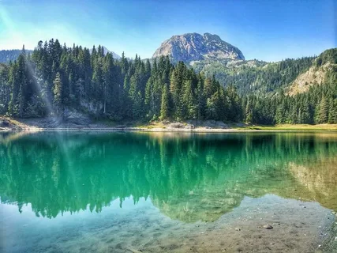

Парк Дурмитор
Национальный парк Дурмитор — это одно из самых живописных мест Черногории, известное своими потрясающими горными ландшафтами, глубокими ущельями и кристально чистыми озерами. Расположенный в центре Динарских Альп, парк входит в список Всемирного наследия ЮНЕСКО и предлагает уникальные возможности для занятий спортом. Здесь вы найдете великолепное озеро Черное, высокие вершины, такие как Музей и Боботов Кук, а также множество пеших маршрутов для туристов разных уровней. Зимой Дурмитор привлекает любителей лыжного спорта и сноуборда, а летом — туристов.
